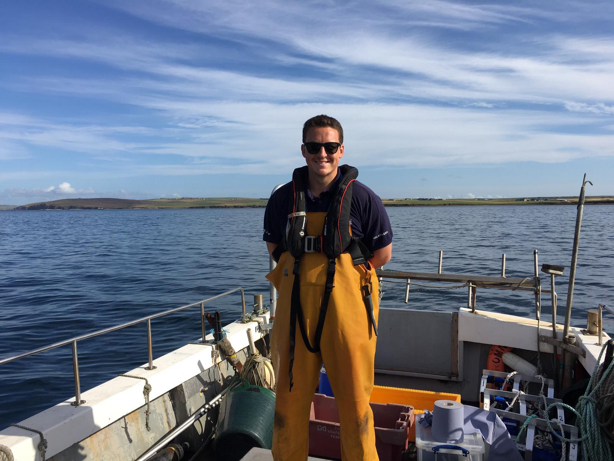
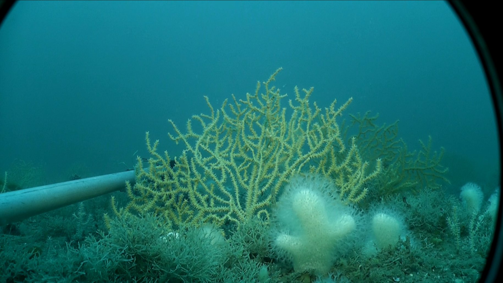
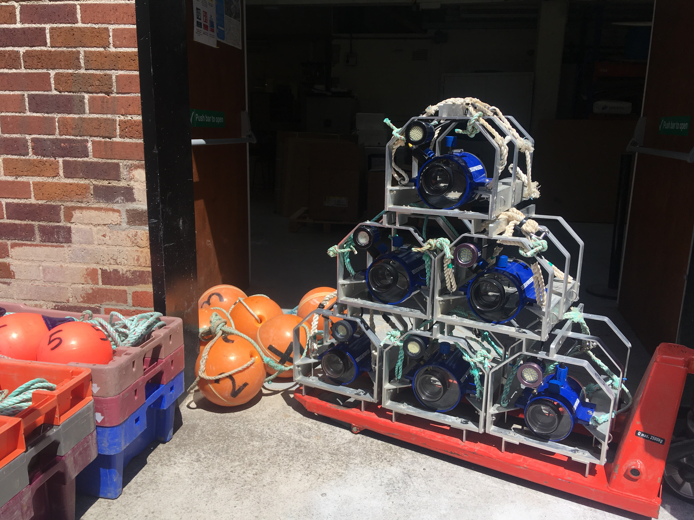
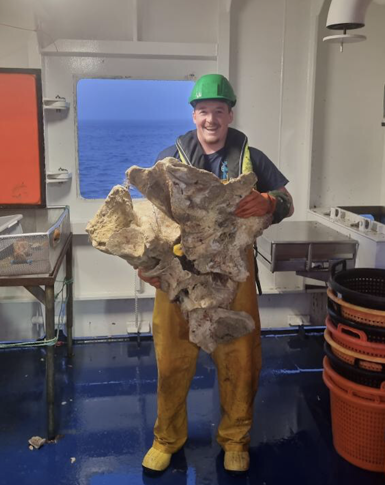
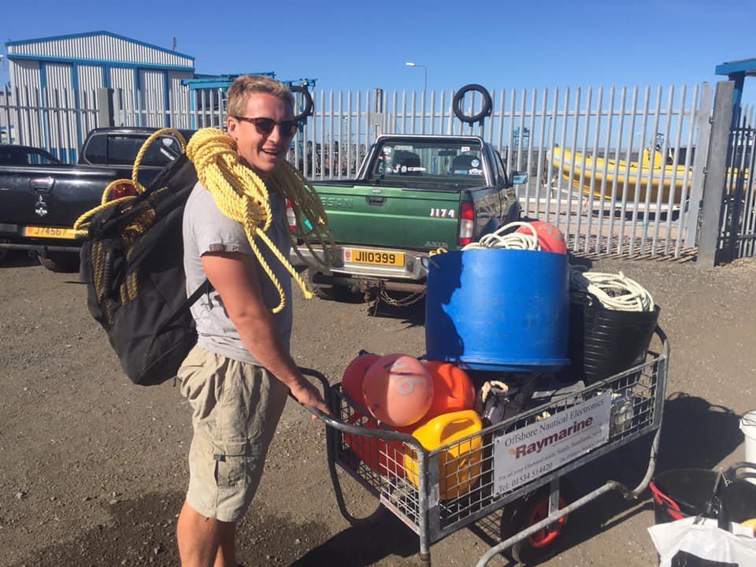

Dr. Bede Ffinian Rowe Davies
Marine Ecologist and Statistician bedeffinian@gmail.com
statistics
ecology
marine
science
marine management
consultancy
Bede Ffinian Rowe Davies
Post-Doctoral Researcher bedeffinian@gmail.com
Laboratoire ISOMer, UFR Sciences et Techniques
Nantes University, France.
Who am I?
My name is Bede Ffinian Rowe Davies a Post-Doctoral Researcher in Marine Ecology and Remote Sensing at the University of Nantes. I am a researcher interested in the large scale changes in marine ecosystems in relation to anthropogenic activities and drivers, using novel techniques alongside traditional methods.
Current Post-Doctoral Work
The current project I am taking part in aims to create scaleable and generaliseable classification models to use Spectral Reflectance measured from Satellite imagery to predict spatial extent of intertidal habitats across the whole of Northern Europe. This can assist biodiversity management over great spatial scales while also providing real-time data (assuming regular available satellite imagery).

Previous Post-Doctoral Work
After my PhD I was a Post-Doctoral researcher at the University of Plymouth assessing changes in Blue Carbon stores around Jersey in the UK Channel Islands. The project aimed to assess the stored carbon within sedimentary habitats in Jersey. This information was then being used alongside spatial habitat data to create a preliminary estimate of total carbon within sedimentary habitats across Jersey’s territorial waters. Cores and Grabs were taken across Jersey’s waters, then prepared and analysed for their total and organic carbon content with CHN analysis.
PhD
I completed my PhD based at the University of Plymouth. The title of my PhD was: The Effectiveness of Partially Protected Marine Areas for Ecosystem Based Fisheries Management. The work centred around the Marine Protected Area (MPA) in Lyme Bay (UK), which excluded all demersal towed fishing activity across 206km\(^2\) of seabed in 2008. University of Plymouth staff and students have monitored the benthic environment across the bay (inside and outside the MPA) annually, using a range of underwater sampling equipment.
The methods include:
Passive Acoustic Monitoring (PAM)
Towed Underwater Video Systems (TUVs)
Baited Remote Underwater Video Systems (BRUVs)

The objective of my PhD was to assess how the protection affected the benthic ecosystems inside vs outside the MPA.
My duties included:
the continued application of annual surveys alongside other members of the team,
organisation of the 12 year data sets for BRUVs and TUVs, and 5 years of PAM recordings,
analysis of BRUVs and PAM data sets,
statistical analysis of the time series data,
assessment of the applicability of the methods,
the creation of journal style articles for publication.

Experience
Projects
I have worked and assisted in many projects across the UK including:
Long term MPA Assessment
Ecological Impact Assessment of a 50 Year Storm
Fisheries Stock Assessment
Seagrass Mapping
Wave Energy Device Impact Assessment
Offshore Aquaculture Impact Assessment
Sedimentary Blue Carbon Assessment
Acoustic Assessments of Marine Soundscapes.

Further afield, I have also worked in location and with data from:
the Galapagos Islands assessing both Plastic Pollution and Biological Invasive species
the Ecuadorian fisheries department (Instituto Nacional de Pesca) asssessing bycatch of protected species

the Himalayan mountains and the Ganges River alongside National Geographic researchers assessing plastics.
the Greenlandic Arctic Ocean as a Benthic Taxonomist aboard a Fisheries Research Vessel

Through this work I have collaborated with researchers from across the globe and across many disciplines combining in-the-field research (Underwater videography (BRUVs), boatwork, snorkelling, SCUBA, intertidal estuary surveys) and in the lab (Sediment core and grab preparation). Often, I have then been responsible for data organisation, analysis and presentation.